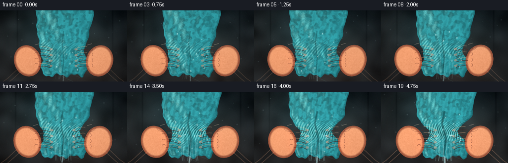
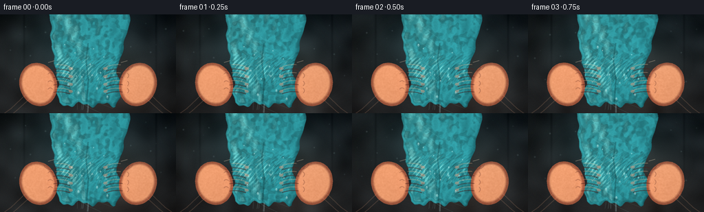
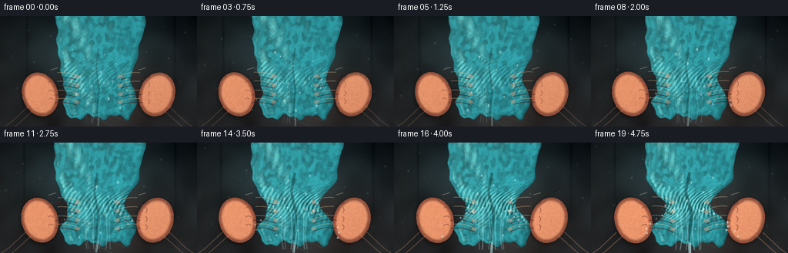
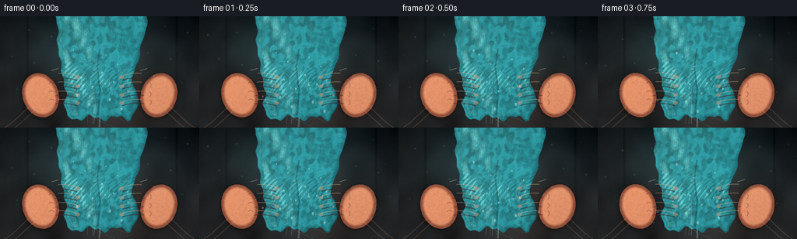

CODING AGENTS AS PIXEL WORLD MODELS
traex/DeepSeek-V4.1-Flash · phygen_015
点击播放 · 原生 RGB 像素
逐轮保存的候选
回放视频、检查图与代码变化。
每份候选均可单独播放。实际图片检查记录在下方工具轨迹中。
候选 01播放与检查图
点击播放 · 原生 RGB 像素

展开代码变化
--- 上一保存版本
+++ 本次保存版本
@@ -0,0 +1,511 @@
+from pathlib import Path
+import math
+
+import numpy as np
+from PIL import Image, ImageDraw, ImageFilter
+from scipy.ndimage import distance_transform_edt, gaussian_filter
+
+import artifact_io
+
+
+CASE_DIR = Path(__file__).resolve().parent
+W, H, N = 256, 144, 20
+SS = 3
+RW, RH = W * SS, H * SS
+RNG = np.random.default_rng(1515)
+
+
+def s(value):
+ return int(round(value * SS))
+
+
+def smoothstep(edge0, edge1, value):
+ x = np.clip((value - edge0) / (edge1 - edge0), 0.0, 1.0)
+ return x * x * (3.0 - 2.0 * x)
+
+
+def curve_points(control, count=42):
+ control = np.asarray(control, dtype=np.float64)
+ t = np.linspace(0.0, 1.0, count)[:, None]
+ omt = 1.0 - t
+ p = (
+ omt**3 * control[0]
+ + 3.0 * omt**2 * t * control[1]
+ + 3.0 * omt * t**2 * control[2]
+ + t**3 * control[3]
+ )
+ return [(s(x), s(y)) for x, y in p]
+
+
+def draw_capsule(draw, points, width, fill=255):
+ points = [(s(x), s(y)) for x, y in points]
+ radius = max(1, s(width) // 2)
+ draw.line(points, fill=fill, width=s(width), joint="curve")
+ for x, y in (points[0], points[-1]):
+ draw.ellipse((x - radius, y - radius, x + radius, y + radius), fill=fill)
+
+
+def ellipse_polygon(cx, cy, rx, ry, angle=0.0, count=72):
+ theta = np.linspace(0.0, math.tau, count, endpoint=False)
+ ca, sa = math.cos(angle), math.sin(angle)
+ px = rx * np.cos(theta)
+ py = ry * np.sin(theta)
+ return [(s(cx + px[i] * ca - py[i] * sa), s(cy + px[i] * sa + py[i] * ca)) for i in range(count)]
+
+
+def draw_rotated_ellipse(draw, cx, cy, rx, ry, angle=0.0, fill=255):
+ draw.polygon(ellipse_polygon(cx, cy, rx, ry, angle), fill=fill)
+
+
+def mask_from_draw(fn):
+ image = Image.new("L", (RW, RH), 0)
+ draw = ImageDraw.Draw(image)
+ fn(draw)
+ return np.asarray(image) > 0
+
+
+def colorize_shaded_mask(mask, dark, mid, light, light_dir=(-0.52, -0.68), edge=7.0):
+ dist = distance_transform_edt(mask)
+ dist = gaussian_filter(dist, 2.0 * SS)
+ gy, gx = np.gradient(dist)
+ scale = max(1.0, 8.0 * SS)
+ nx = -gx / scale
+ ny = -gy / scale
+ nz = np.sqrt(np.maximum(0.12, 1.0 - nx * nx - ny * ny))
+ norm = np.sqrt(nx * nx + ny * ny + nz * nz)
+ diffuse = np.clip(
+ (nx * light_dir[0] + ny * light_dir[1] + nz * 0.78) / norm,
+ -0.25,
+ 1.0,
+ )
+ lit = np.clip(0.36 + 0.72 * diffuse, 0.0, 1.0)
+ edge_fade = np.clip(dist / (edge * SS), 0.0, 1.0)
+ lit *= 0.48 + 0.52 * edge_fade
+ dark = np.asarray(dark, dtype=np.float64)
+ mid = np.asarray(mid, dtype=np.float64)
+ light = np.asarray(light, dtype=np.float64)
+ low = smoothstep(0.05, 0.52, lit)
+ high = smoothstep(0.58, 0.94, lit)
+ rgb = dark[None, None, :] * (1.0 - low[..., None]) + mid[None, None, :] * low[..., None]
+ rgb = rgb * (1.0 - high[..., None]) + light[None, None, :] * high[..., None]
+ return rgb, lit, dist
+
+
+def composite(base, rgb, mask, alpha=1.0):
+ m = (mask.astype(np.float64) * alpha)[..., None]
+ return base * (1.0 - m) + rgb * m
+
+
+def make_background(frame):
+ yy, xx = np.mgrid[0:RH, 0:RW].astype(np.float64)
+ x = xx / SS
+ y = yy / SS
+ top = np.array([13.0, 20.0, 24.0])
+ bottom = np.array([37.0, 38.0, 39.0])
+ blend = np.clip(y / H, 0.0, 1.0) ** 0.8
+ image = top[None, None, :] * (1.0 - blend[..., None]) + bottom[None, None, :] * blend[..., None]
+
+ # Cool bounce from a wet tiled wall, with a warm pool of light behind the hands.
+ cool = np.exp(-((x - 106.0) ** 2 / 7200.0 + (y - 42.0) ** 2 / 2700.0))
+ warm = np.exp(-((x - 163.0) ** 2 / 2800.0 + (y - 87.0) ** 2 / 3600.0))
+ image += cool[..., None] * np.array([5.0, 18.0, 21.0])
+ image += warm[..., None] * np.array([18.0, 10.0, 5.0])
+
+ # Soft grout lines and mottled stone keep the background from reading as flat.
+ grout = np.exp(-((np.mod(x - 3.0, 64.0) - 32.0) ** 2) / 2.4)
+ grout *= np.exp(-((y - 22.0) ** 2) / 4200.0)
+ image -= grout[..., None] * np.array([7.0, 8.0, 8.0])
+ mottle = gaussian_filter(RNG.normal(0.0, 1.0, (RH, RW)), 9.0 * SS)
+ mottle /= max(1e-6, np.std(mottle))
+ image += mottle[..., None] * np.array([3.5, 4.0, 4.2])
+
+ # Fine wet specular pinpricks on the wall.
+ bg = Image.fromarray(np.clip(image, 0, 255).astype(np.uint8))
+ draw = ImageDraw.Draw(bg, "RGBA")
+ for i in range(34):
+ px = 8 + (i * 73 + frame * 11) % 241
+ py = 10 + (i * 47 + frame * 3) % 107
+ radius = 0.45 + (i % 3) * 0.28
+ draw.ellipse(
+ (s(px - radius), s(py - radius), s(px + radius), s(py + radius)),
+ fill=(155, 187, 190, 32 + (i % 4) * 8),
+ )
+ bg = bg.filter(ImageFilter.GaussianBlur(0.45 * SS))
+ image = np.asarray(bg).astype(np.float64)
+
+ vignette = np.clip(1.12 - 0.42 * (((x - W / 2) / (W * 0.72)) ** 2 + ((y - H / 2) / (H * 0.83)) ** 2), 0.48, 1.0)
+ image *= vignette[..., None]
+ return image
+
+
+def cloth_geometry(frame, pressure):
+ yy, xx = np.mgrid[0:RH, 0:RW].astype(np.float64)
+ y = yy / SS
+ x = xx / SS
+ center = 128.0 + 2.2 * np.sin(y * 0.061 + 0.6) + 1.4 * np.sin(y * 0.137 + frame * 0.05)
+
+ knots_y = np.array([-16.0, 8.0, 35.0, 58.0, 74.0, 86.0, 99.0, 112.0, 126.0, 140.0])
+ widths = np.array([60.0, 58.0, 54.0, 50.0, 47.0, 45.0, 46.0, 48.0, 43.0, 38.0])
+ half = np.interp(y, knots_y, widths)
+ grip = np.exp(-((y - 83.0) / 18.5) ** 2)
+ half *= 1.0 - (0.40 * pressure) * grip
+ half *= 1.0 + 0.055 * pressure * np.exp(-((y - 51.0) / 13.0) ** 2)
+ half *= 1.0 + 0.040 * pressure * np.exp(-((y - 113.0) / 15.0) ** 2)
+ half += 0.7 * np.sin(y * 0.23 + frame * 0.08) * smoothstep(68.0, 105.0, y)
+
+ edge_wave = 0.85 * np.sin(y * 0.31 + 1.7)
+ left = center - half + edge_wave
+ right = center + half + 0.55 * np.sin(y * 0.27 + 0.2)
+ in_cloth = (y >= -18.0) & (y <= 138.0) & (x >= left) & (x <= right)
+ hem = 131.5 + 2.8 * np.sin((x - 92.0) * 0.19) + 1.6 * np.sin(x * 0.43)
+ in_cloth &= y <= hem
+ return in_cloth, center, half
+
+
+def render_cloth(frame, pressure):
+ mask, center, half = cloth_geometry(frame, pressure)
+ yy, xx = np.mgrid[0:RH, 0:RW].astype(np.float64)
+ x = xx / SS
+ y = yy / SS
+ u = np.clip((x - center) / np.maximum(half, 1.0), -1.35, 1.35)
+
+ dist = distance_transform_edt(mask)
+ edge = np.clip(dist / (5.0 * SS), 0.0, 1.0)
+ grip = np.exp(-((y - 82.0) / 17.0) ** 2)
+
+ # Ribs become diagonal, tightly bunched wrinkles under pressure.
+ rib = np.sin((u * (7.0 + 4.5 * pressure) + y * 0.045 + 0.28 * np.sin(y * 0.17)) * math.pi)
+ broad = np.sin((u * 2.7 - y * 0.028 + 0.4) * math.pi)
+ pinch_wrinkle = np.sin((u * 14.0 + y * 0.33 + 1.2) * math.pi)
+ pinch_wrinkle *= grip * (0.16 + 0.55 * pressure)
+
+ coarse = gaussian_filter(RNG.normal(0.0, 1.0, (RH, RW)), 2.0 * SS)
+ coarse /= max(1e-6, np.std(coarse))
+ fine = gaussian_filter(RNG.normal(0.0, 1.0, (RH, RW)), 0.55 * SS)
+ fine /= max(1e-6, np.std(fine))
+
+ light = 0.76 - 0.13 * u + 0.085 * broad + 0.055 * rib + pinch_wrinkle
+ light += 0.022 * coarse + 0.012 * fine
+ light *= 0.55 + 0.45 * edge
+ light += 0.05 * np.exp(-((u + 0.36) ** 2) / 0.09) * (0.5 + 0.5 * broad)
+
+ dark = np.array([16.0, 66.0, 72.0])
+ mid = np.array([39.0, 123.0, 128.0])
+ bright = np.array([112.0, 188.0, 184.0])
+ t = np.clip(light, 0.0, 1.15)
+ rgb = dark[None, None, :] * np.clip(1.25 - t, 0.0, 1.0)[..., None]
+ rgb += mid[None, None, :] * np.clip(1.0 - np.abs(t - 0.72) * 1.7, 0.0, 1.0)[..., None]
+ rgb += bright[None, None, :] * smoothstep(0.80, 1.08, t)[..., None] * 0.72
+
+ # Damp darker passages and a cyan sheen on high folds.
+ wet = smoothstep(-0.15, 0.9, coarse) * 0.16
+ rgb *= (1.0 - wet[..., None])
+ rgb += np.array([12.0, 33.0, 35.0])[None, None, :] * smoothstep(0.25, 1.0, broad)[..., None] * 0.10
+ rgb += np.array([24.0, 48.0, 45.0])[None, None, :] * (0.30 * pressure * grip)[..., None]
+
+ # Narrow cloth folds and a seam catch the overhead light.
+ fold_highlight = smoothstep(0.84, 1.0, rib) * (0.30 + 0.45 * pressure) * grip
+ rgb += fold_highlight[..., None] * np.array([48.0, 61.0, 53.0])
+ return rgb, mask
+
+
+def hand_masks(frame, pressure, side):
+ inward = 6.5 * pressure
+ direction = 1.0 if side == "left" else -1.0
+ phase = 0.0 if side == "left" else math.pi
+
+ # The wrists enter from the bottom corners, leaving the squeezed cloth centered.
+ if side == "left":
+ forearm = curve_points([(-25, 161), (7, 146), (34, 126), (53, 106)], 36)
+ palm = (55.0 + inward, 102.0, 27.0, 32.0, -0.30)
+ else:
+ forearm = curve_points([(281, 161), (249, 146), (222, 126), (203, 106)], 36)
+ palm = (201.0 - inward, 102.0, 27.0, 32.0, 0.30)
+
+ fingers = []
+ for index, yy in enumerate((77.5, 89.0, 100.5, 111.0)):
+ bend = 2.0 + 2.4 * pressure + 0.5 * math.sin(frame * 0.34 + index)
+ base_x = (74.0 + inward) if side == "left" else (182.0 - inward)
+ mid_x = base_x + direction * (14.0 + 2.0 * pressure)
+ tip_x = base_x + direction * (27.0 + 1.6 * pressure)
+ c1 = (base_x, yy)
+ c2 = (mid_x, yy - 1.8 - bend)
+ c3 = (tip_x, yy + 1.0 + 0.35 * bend)
+ fingers.append((curve_points([c1, c2, c3, c3], 28), 11.2 - index * 0.65))
+
+ if side == "left":
+ thumb = curve_points([(49 + inward, 83), (63 + inward, 65), (79 + inward, 65), (87 + inward, 71)], 24)
+ else:
+ thumb = curve_points([(207 - inward, 83), (193 - inward, 65), (177 - inward, 65), (169 - inward, 71)], 24)
+
+ def draw_union(draw):
+ draw_capsule(draw, forearm, 35.0)
+ draw_rotated_ellipse(draw, *palm, fill=255)
+ for points, width in fingers:
+ draw_capsule(draw, points, width)
+ draw_capsule(draw, thumb, 14.2)
+
+ return mask_from_draw(draw_union), forearm, palm, fingers, thumb
+
+
+def render_hand(base, frame, pressure, side):
+ mask, forearm, palm, fingers, thumb = hand_masks(frame, pressure, side)
+ rgb, lit, dist = colorize_shaded_mask(
+ mask,
+ dark=(66, 31, 28),
+ mid=(151, 83, 59),
+ light=(234, 158, 112),
+ light_dir=(-0.62, -0.67) if side == "left" else (-0.44, -0.72),
+ edge=6.0,
+ )
+
+ yy, xx = np.mgrid[0:RH, 0:RW].astype(np.float64)
+ x = xx / SS
+ y = yy / SS
+ # Skin warmth and subsurface glow near fingertips.
+ fingertips = np.exp(-((x - (96 if side == "left" else 160)) ** 2) / 360.0 - ((y - 94) ** 2) / 1800.0)
+ rgb += fingertips[..., None] * np.array([23.0, 5.0, 3.0])
+ grain = gaussian_filter(RNG.normal(0.0, 1.0, (RH, RW)), 0.7 * SS)
+ grain /= max(1e-6, np.std(grain))
+ rgb += grain[..., None] * 2.3
+
+ base = composite(base, rgb, mask)
+ overlay = Image.fromarray(np.clip(base, 0, 255).astype(np.uint8))
+ draw = ImageDraw.Draw(overlay, "RGBA")
+
+ inward = 6.5 * pressure
+ direction = 1.0 if side == "left" else -1.0
+ # Inter-finger shadows and knuckle highlights define the gripping pose.
+ for index, (points, width) in enumerate(fingers):
+ pts = np.asarray(points, dtype=np.float64) / SS
+ if len(pts) > 3:
+ shadow = [(px, py + width * 0.31) for px, py in pts[2:]]
+ draw.line([(s(px), s(py)) for px, py in shadow], fill=(65, 28, 25, 120), width=s(1.25))
+ top = [(px, py - width * 0.26) for px, py in pts[4:-3]]
+ draw.line([(s(px), s(py)) for px, py in top], fill=(255, 192, 146, 82), width=s(1.0))
+ tip = pts[-1]
+ nail_rx = 3.2 - index * 0.15
+ nail_ry = 2.0
+ nail = ellipse_polygon(tip[0] + direction * 1.2, tip[1] - 0.6, nail_rx, nail_ry, 0.05 * direction)
+ draw.polygon(nail, fill=(224, 151, 121, 120))
+ draw.line(
+ [(s(tip[0] - 1.6), s(tip[1] - 1.8)), (s(tip[0] + 1.8), s(tip[1] - 1.9))],
+ fill=(255, 211, 176, 90),
+ width=s(0.55),
+ )
+
+ # Knuckle creases, each deepening as the fingers close.
+ knuckle_alpha = int(82 + 45 * pressure)
+ for index, yy in enumerate((77.5, 89.0, 100.5, 111.0)):
+ bx = (72.5 + inward) if side == "left" else (183.5 - inward)
+ draw.arc(
+ (s(bx - 4.2), s(yy - 4.2), s(bx + 4.2), s(yy + 4.2)),
+ start=210 if side == "left" else 300,
+ end=330 if side == "left" else 60,
+ fill=(75, 33, 28, knuckle_alpha),
+ width=s(0.9),
+ )
+
+ # Thumb crease and a wet specular streak across the top of the grip.
+ tx = 75 if side == "left" else 181
+ draw.arc((s(tx - 12), s(65), s(tx + 12), s(82)), 8, 168, fill=(81, 35, 29, 100), width=s(0.8))
+ draw.line(
+ [(s(tx - 5), s(70)), (s(tx + 4), s(67.5))],
+ fill=(255, 220, 185, 105),
+ width=s(1.05),
+ )
+
+ # Forearm tendons become more prominent with force.
+ if side == "left":
+ tendons = [
+ [(-8, 154), (16, 137), (37, 117)],
+ [(-1, 160), (24, 140), (45, 121)],
+ ]
+ else:
+ tendons = [
+ [(264, 154), (240, 137), (219, 117)],
+ [(257, 160), (232, 140), (211, 121)],
+ ]
+ for i, pts in enumerate(tendons):
+ draw.line(
+ [(s(px), s(py)) for px, py in pts],
+ fill=(255, 182, 139, int(38 + 34 * pressure)),
+ width=s(1.1),
+ )
+ return np.asarray(overlay).astype(np.float64)
+
+
+def add_cloth_surface_details(image, frame, pressure):
+ overlay = Image.fromarray(np.clip(image, 0, 255).astype(np.uint8))
+ draw = ImageDraw.Draw(overlay, "RGBA")
+
+ # Long diagonal folds and small wet glints on exposed fabric.
+ for i in range(9):
+ y0 = 12 + i * 12.5
+ bend = 4.0 * math.sin(i * 1.6 + frame * 0.03)
+ alpha = 31 + (i % 3) * 8
+ draw.line(
+ [(s(95 + bend), s(y0)), (s(126 + 2 * math.sin(i)), s(y0 + 23)), (s(160 - bend), s(y0 + 37))],
+ fill=(135, 216, 207, alpha),
+ width=s(0.7),
+ )
+ # Compressed inner fold, increasingly dark and narrow.
+ draw.line(
+ [(s(128), s(42)), (s(125 - 2 * pressure), s(67)), (s(128 + 3 * pressure), s(95)), (s(126), s(128))],
+ fill=(7, 49, 53, int(72 + 65 * pressure)),
+ width=s(2.1 + 1.6 * pressure),
+ )
+ return np.asarray(overlay).astype(np.float64)
+
+
+def draw_water(base, frame, pressure):
+ overlay = Image.fromarray(np.clip(base, 0, 255).astype(np.uint8))
+ draw = ImageDraw.Draw(overlay, "RGBA")
+
+ # Water is driven out of the compressed center and runs over the lower cloth.
+ source_y = 91.0
+ streams = 7
+ for i in range(streams):
+ strength = smoothstep(0.12, 0.88, pressure)
+ if i > 2 and pressure < 0.30:
+ continue
+ sx = 112.0 + i * 5.2 + 1.7 * math.sin(i * 2.2 + frame * 0.2)
+ drift = 2.2 * math.sin(frame * 0.35 + i)
+ width = 0.65 + 0.34 * ((i + frame) % 3)
+ alpha = int((38 + 72 * strength) * (0.64 + 0.16 * (i % 3)))
+ draw.line(
+ [
+ (s(sx), s(source_y + 2)),
+ (s(sx + drift * 0.3), s(106)),
+ (s(sx + drift), s(121)),
+ (s(sx - drift * 0.35), s(139)),
+ ],
+ fill=(161, 221, 225, alpha),
+ width=s(width),
+ )
+ draw.line(
+ [
+ (s(sx + 0.7), s(104)),
+ (s(sx + drift + 0.7), s(120)),
+ (s(sx - drift * 0.35 + 0.7), s(138)),
+ ],
+ fill=(231, 249, 246, int(alpha * 0.75)),
+ width=s(0.38),
+ )
+
+ # Central cascade below the hem, visible between the wrists.
+ cascade_alpha = int(45 + 105 * pressure)
+ draw.line(
+ [(s(128), s(130)), (s(127 + math.sin(frame * 0.4)), s(143))],
+ fill=(178, 227, 230, cascade_alpha),
+ width=s(1.7 + pressure * 1.8),
+ )
+ draw.line(
+ [(s(128.8), s(131)), (s(128 + math.sin(frame * 0.4)), s(143))],
+ fill=(238, 253, 251, int(cascade_alpha * 0.75)),
+ width=s(0.55),
+ )
+
+ # Fast spray: deterministic ballistic drops, emitted earlier at higher pressure.
+ n_spray = int(5 + 18 * pressure)
+ for i in range(n_spray):
+ local_t = ((i * 0.61803398875 + frame * 0.17) % 1.0)
+ life = 0.45 + 0.35 * ((i * 7) % 5) / 4.0
+ phase = local_t * life
+ side = -1.0 if i % 2 == 0 else 1.0
+ x = 128.0 + side * (7.0 + 41.0 * phase + 2.5 * math.sin(i))
+ y = 88.0 + 23.0 * phase * phase + (i % 6) * 2.0 * phase
+ radius = 0.55 + 0.65 * ((i * 3) % 4) / 3.0
+ alpha = int(80 + 80 * pressure)
+ draw.ellipse(
+ (s(x - radius), s(y - radius), s(x + radius), s(y + radius)),
+ fill=(203, 238, 237, alpha),
+ )
+ if i % 3 == 0:
+ draw.line(
+ [(s(x), s(y - radius * 3.2)), (s(x), s(y - radius))],
+ fill=(174, 224, 225, int(alpha * 0.7)),
+ width=s(0.45),
+ )
+
+ # A few larger drops bead on the wet cloth and fingertips.
+ for i in range(12):
+ x = 94.0 + (i * 37 + frame * 5) % 69
+ y = 44.0 + (i * 29 + frame * 3) % 81
+ rx = 0.7 + (i % 3) * 0.32
+ draw.ellipse(
+ (s(x - rx), s(y - rx * 1.45), s(x + rx), s(y + rx * 1.45)),
+ fill=(196, 238, 235, 95),
+ )
+ draw.ellipse(
+ (s(x - rx * 0.35), s(y - rx * 0.9), s(x + rx * 0.25), s(y - rx * 0.2)),
+ fill=(245, 255, 251, 150),
+ )
+
+ overlay = overlay.filter(ImageFilter.GaussianBlur(0.22 * SS))
+ return np.asarray(overlay).astype(np.float64)
+
+
+def add_lighting_and_finish(image, frame, pressure):
+ yy, xx = np.mgrid[0:RH, 0:RW].astype(np.float64)
+ x = xx / SS
+ y = yy / SS
+
+ # Warm key on the hands, cool rim behind the cloth.
+ key = np.exp(-((x - 45.0) ** 2 / 6500.0 + (y - 35.0) ** 2 / 4200.0))
+ rim = np.exp(-((x - 151.0) ** 2 / 5200.0 + (y - 60.0) ** 2 / 1500.0))
+ image += key[..., None] * np.array([9.0, 5.5, 3.0])
+ image += rim[..., None] * np.array([3.0, 9.0, 10.0])
+
+ # Subtle exposure lift mirrors the rapidly building physical tension.
+ image *= 0.98 + 0.045 * pressure
+
+ # Fine silver-halide style grain and restrained highlight bloom.
+ grain = RNG.normal(0.0, 1.0, (RH, RW))
+ image += grain[..., None] * 1.35
+ highlights = np.clip((image - 192.0) / 63.0, 0.0, 1.0)
+ bloom = gaussian_filter(highlights, (2.4 * SS, 2.4 * SS, 0.0))
+ image += bloom * np.array([9.0, 10.0, 10.0])
+
+ image = np.clip(image, 0, 255)
+ return image
+
+
+def render_frame(frame):
+ t = frame / (N - 1)
+ # Rapid, accelerating pressure; a tiny hold at the end makes the final squeeze read.
+ pressure = float(np.clip(0.08 + 0.92 * (t**1.42), 0.0, 1.0))
+ if frame == N - 1:
+ pressure = 1.0
+
+ image = make_background(frame)
+ cloth_rgb, cloth_mask = render_cloth(frame, pressure)
+ image = composite(image, cloth_rgb, cloth_mask)
+ image = add_cloth_surface_details(image, frame, pressure)
+ image = render_hand(image, frame, pressure, "left")
+ image = render_hand(image, frame, pressure, "right")
+ image = draw_water(image, frame, pressure)
+ image = add_lighting_and_finish(image, frame, pressure)
+
+ # A restrained push-in adds urgency while preserving a stable, legible grip.
+ zoom = 1.0 + 0.045 * (t**1.2)
+ pil = Image.fromarray(image.astype(np.uint8))
+ crop_w = RW / zoom
+ crop_h = RH / zoom
+ cx = RW * (0.5 + 0.006 * math.sin(t * math.pi))
+ cy = RH * (0.51 + 0.004 * t)
+ left = float(np.clip(cx - crop_w / 2, 0.0, RW - crop_w))
+ top = float(np.clip(cy - crop_h / 2, 0.0, RH - crop_h))
+ box = (left, top, left + crop_w, top + crop_h)
+ pil = pil.resize((RW, RH), Image.Resampling.LANCZOS, box=box)
+ return np.asarray(pil.resize((W, H), Image.Resampling.LANCZOS)).astype(np.uint8)
+
+
+def main():
+ frames = np.stack([render_frame(i) for i in range(N)])
+ artifact_io.save(frames, CASE_DIR)
+ print(f"saved {frames.shape} to {CASE_DIR}")
+
+
+if __name__ == "__main__":
+ main()
候选 02播放与检查图
点击播放 · 原生 RGB 像素


展开代码变化
--- 上一保存版本
+++ 本次保存版本
@@ -13,6 +13,10 @@
SS = 3
RW, RH = W * SS, H * SS
RNG = np.random.default_rng(1515)
+NOISE_COARSE = RNG.normal(0.0, 1.0, (RH, RW))
+NOISE_FINE = RNG.normal(0.0, 1.0, (RH, RW))
+NOISE_MOTTLE = RNG.normal(0.0, 1.0, (RH, RW))
+NOISE_GRAIN = RNG.normal(0.0, 1.0, (RH, RW))
def s(value):
@@ -115,7 +119,7 @@
grout = np.exp(-((np.mod(x - 3.0, 64.0) - 32.0) ** 2) / 2.4)
grout *= np.exp(-((y - 22.0) ** 2) / 4200.0)
image -= grout[..., None] * np.array([7.0, 8.0, 8.0])
- mottle = gaussian_filter(RNG.normal(0.0, 1.0, (RH, RW)), 9.0 * SS)
+ mottle = gaussian_filter(NOISE_MOTTLE, 9.0 * SS)
mottle /= max(1e-6, np.std(mottle))
image += mottle[..., None] * np.array([3.5, 4.0, 4.2])
@@ -179,10 +183,13 @@
pinch_wrinkle = np.sin((u * 14.0 + y * 0.33 + 1.2) * math.pi)
pinch_wrinkle *= grip * (0.16 + 0.55 * pressure)
- coarse = gaussian_filter(RNG.normal(0.0, 1.0, (RH, RW)), 2.0 * SS)
+ coarse = gaussian_filter(NOISE_COARSE, 2.0 * SS)
coarse /= max(1e-6, np.std(coarse))
- fine = gaussian_filter(RNG.normal(0.0, 1.0, (RH, RW)), 0.55 * SS)
+ fine = gaussian_filter(NOISE_FINE, 0.55 * SS)
fine /= max(1e-6, np.std(fine))
+ warp = int(round(1.8 * pressure * SS))
+ coarse = np.roll(coarse, warp, axis=1)
+ fine = np.roll(fine, -warp, axis=1)
light = 0.76 - 0.13 * u + 0.085 * broad + 0.055 * rib + pinch_wrinkle
light += 0.022 * coarse + 0.012 * fine
@@ -265,7 +272,7 @@
# Skin warmth and subsurface glow near fingertips.
fingertips = np.exp(-((x - (96 if side == "left" else 160)) ** 2) / 360.0 - ((y - 94) ** 2) / 1800.0)
rgb += fingertips[..., None] * np.array([23.0, 5.0, 3.0])
- grain = gaussian_filter(RNG.normal(0.0, 1.0, (RH, RW)), 0.7 * SS)
+ grain = gaussian_filter(NOISE_GRAIN, 0.7 * SS)
grain /= max(1e-6, np.std(grain))
rgb += grain[..., None] * 2.3
@@ -407,14 +414,14 @@
)
# Fast spray: deterministic ballistic drops, emitted earlier at higher pressure.
- n_spray = int(5 + 18 * pressure)
+ n_spray = int(5 + 24 * pressure)
for i in range(n_spray):
- local_t = ((i * 0.61803398875 + frame * 0.17) % 1.0)
- life = 0.45 + 0.35 * ((i * 7) % 5) / 4.0
- phase = local_t * life
+ age = ((i * 0.61803398875 + frame * 0.17) % 1.0)
+ speed = 0.75 + 0.42 * ((i * 7) % 5) / 4.0
+ phase = age * speed
side = -1.0 if i % 2 == 0 else 1.0
- x = 128.0 + side * (7.0 + 41.0 * phase + 2.5 * math.sin(i))
- y = 88.0 + 23.0 * phase * phase + (i % 6) * 2.0 * phase
+ x = 128.0 + side * (5.5 + 49.0 * phase + 2.1 * math.sin(i))
+ y = 86.0 + 25.0 * phase * phase + (i % 6) * 2.2 * phase
radius = 0.55 + 0.65 * ((i * 3) % 4) / 3.0
alpha = int(80 + 80 * pressure)
draw.ellipse(
@@ -461,7 +468,7 @@
image *= 0.98 + 0.045 * pressure
# Fine silver-halide style grain and restrained highlight bloom.
- grain = RNG.normal(0.0, 1.0, (RH, RW))
+ grain = NOISE_GRAIN
image += grain[..., None] * 1.35
highlights = np.clip((image - 192.0) / 63.0, 0.0, 1.0)
bloom = gaussian_filter(highlights, (2.4 * SS, 2.4 * SS, 0.0))
候选 03播放与检查图
候选 04播放与检查图
点击播放 · 原生 RGB 像素


展开代码变化
--- 上一保存版本
+++ 本次保存版本
@@ -100,6 +100,13 @@
return base * (1.0 - m) + rgb * m
+def contact_shadow(base, mask, dx, dy, strength, blur):
+ shadow = gaussian_filter(mask.astype(np.float64), blur)
+ shadow = np.roll(shadow, (dy, dx), axis=(0, 1))
+ shadow *= 1.0 - mask
+ return base * (1.0 - strength * shadow[..., None])
+
+
def make_background(frame):
yy, xx = np.mgrid[0:RH, 0:RW].astype(np.float64)
x = xx / SS
@@ -193,6 +200,7 @@
light = 0.76 - 0.13 * u + 0.085 * broad + 0.055 * rib + pinch_wrinkle
light += 0.022 * coarse + 0.012 * fine
+ light += 0.012 * np.sin(x * 2.35 + y * 0.21) * smoothstep(0.1, 0.9, edge)
light *= 0.55 + 0.45 * edge
light += 0.05 * np.exp(-((u + 0.36) ** 2) / 0.09) * (0.5 + 0.5 * broad)
@@ -223,30 +231,30 @@
# The wrists enter from the bottom corners, leaving the squeezed cloth centered.
if side == "left":
- forearm = curve_points([(-25, 161), (7, 146), (34, 126), (53, 106)], 36)
- palm = (55.0 + inward, 102.0, 27.0, 32.0, -0.30)
+ forearm = curve_points([(-25, 161), (7, 146), (32, 127), (49, 107)], 36)
+ palm = (51.5 + inward, 102.0, 23.0, 29.0, -0.30)
else:
- forearm = curve_points([(281, 161), (249, 146), (222, 126), (203, 106)], 36)
- palm = (201.0 - inward, 102.0, 27.0, 32.0, 0.30)
+ forearm = curve_points([(281, 161), (249, 146), (224, 127), (207, 107)], 36)
+ palm = (204.5 - inward, 102.0, 23.0, 29.0, 0.30)
fingers = []
for index, yy in enumerate((77.5, 89.0, 100.5, 111.0)):
bend = 2.0 + 2.4 * pressure + 0.5 * math.sin(frame * 0.34 + index)
- base_x = (74.0 + inward) if side == "left" else (182.0 - inward)
- mid_x = base_x + direction * (14.0 + 2.0 * pressure)
- tip_x = base_x + direction * (27.0 + 1.6 * pressure)
+ base_x = (67.0 + inward) if side == "left" else (189.0 - inward)
+ mid_x = base_x + direction * (15.0 + 2.0 * pressure)
+ tip_x = base_x + direction * (31.0 + 1.6 * pressure)
c1 = (base_x, yy)
c2 = (mid_x, yy - 1.8 - bend)
c3 = (tip_x, yy + 1.0 + 0.35 * bend)
- fingers.append((curve_points([c1, c2, c3, c3], 28), 11.2 - index * 0.65))
+ fingers.append((curve_points([c1, c2, c3, c3], 28), 10.6 - index * 0.62))
if side == "left":
- thumb = curve_points([(49 + inward, 83), (63 + inward, 65), (79 + inward, 65), (87 + inward, 71)], 24)
+ thumb = curve_points([(43 + inward, 84), (58 + inward, 65), (77 + inward, 65), (87 + inward, 71)], 24)
else:
- thumb = curve_points([(207 - inward, 83), (193 - inward, 65), (177 - inward, 65), (169 - inward, 71)], 24)
+ thumb = curve_points([(213 - inward, 84), (198 - inward, 65), (179 - inward, 65), (169 - inward, 71)], 24)
def draw_union(draw):
- draw_capsule(draw, forearm, 35.0)
+ draw_capsule(draw, forearm, 32.0)
draw_rotated_ellipse(draw, *palm, fill=255)
for points, width in fingers:
draw_capsule(draw, points, width)
@@ -259,9 +267,9 @@
mask, forearm, palm, fingers, thumb = hand_masks(frame, pressure, side)
rgb, lit, dist = colorize_shaded_mask(
mask,
- dark=(66, 31, 28),
- mid=(151, 83, 59),
- light=(234, 158, 112),
+ dark=(61, 29, 27),
+ mid=(143, 78, 57),
+ light=(224, 146, 106),
light_dir=(-0.62, -0.67) if side == "left" else (-0.44, -0.72),
edge=6.0,
)
@@ -276,6 +284,7 @@
grain /= max(1e-6, np.std(grain))
rgb += grain[..., None] * 2.3
+ base = contact_shadow(base, mask, -3, 4, 0.52, 3.0 * SS)
base = composite(base, rgb, mask)
overlay = Image.fromarray(np.clip(base, 0, 255).astype(np.uint8))
draw = ImageDraw.Draw(overlay, "RGBA")
@@ -304,7 +313,7 @@
# Knuckle creases, each deepening as the fingers close.
knuckle_alpha = int(82 + 45 * pressure)
for index, yy in enumerate((77.5, 89.0, 100.5, 111.0)):
- bx = (72.5 + inward) if side == "left" else (183.5 - inward)
+ bx = (65.5 + inward) if side == "left" else (190.5 - inward)
draw.arc(
(s(bx - 4.2), s(yy - 4.2), s(bx + 4.2), s(yy + 4.2)),
start=210 if side == "left" else 300,
@@ -314,7 +323,7 @@
)
# Thumb crease and a wet specular streak across the top of the grip.
- tx = 75 if side == "left" else 181
+ tx = 71 if side == "left" else 185
draw.arc((s(tx - 12), s(65), s(tx + 12), s(82)), 8, 168, fill=(81, 35, 29, 100), width=s(0.8))
draw.line(
[(s(tx - 5), s(70)), (s(tx + 4), s(67.5))],
候选 05播放与检查图
点击播放 · 原生 RGB 像素
展开代码变化
--- 上一保存版本
+++ 本次保存版本
@@ -42,7 +42,7 @@
def draw_capsule(draw, points, width, fill=255):
- points = [(s(x), s(y)) for x, y in points]
+ points = [(int(round(x)), int(round(y))) for x, y in points]
radius = max(1, s(width) // 2)
draw.line(points, fill=fill, width=s(width), joint="curve")
for x, y in (points[0], points[-1]):
候选 06播放与检查图
可观测工具轨迹
实际执行的命令与返回图片。
命令 1exit 0
/bin/bash -c "pwd && rg --files -g 'prompt.txt' -g 'GENERATION_RULES.md' -g 'task_spec.json' -g '"'!**/.git/**'"'"
命令 2exit 0
/bin/bash -c 'ls -la'
命令 3exit 0
/bin/bash -c 'cat prompt.txt'
命令 4exit 0
/bin/bash -c 'cat GENERATION_RULES.md'
命令 5exit 0
/bin/bash -c 'cat task_spec.json'
命令 6exit 0
/bin/bash -c "sed -n '1,260p' artifact_io.py"
命令 7exit 0
/bin/bash -c "sed -n '1,260p' player_template.html"
命令 8exit 0
/bin/bash -c "python - <<'PY'
import numpy, PIL
print('numpy', numpy.__version__)
print('PIL', PIL.__version__)
try:
import scipy
print('scipy', scipy.__version__)
except Exception as e: print('scipy unavailable', e)
PY"命令 9exit 0
/bin/bash -c 'command -v chafa || true; command -v viu || true; command -v jp2 || true; command -v img2txt || true; command -v ffmpeg || true'
命令 10exit 1
/bin/bash -c 'python generate.py'
命令 11exit 1
/bin/bash -c 'python generate.py'
命令 12exit 1
/bin/bash -c 'python generate.py'
命令 13exit 1
/bin/bash -c 'python generate.py'
命令 14exit 0
/bin/bash -c 'python generate.py'
命令 15exit 0
/bin/bash -c 'command -v magick || command -v convert || true; command -v ffprobe || true; command -v python'
命令 16exit 0
/bin/bash -c 'du -h frames/*.png inspection.png transition_check.png pixels.npz index.html'
命令 17exit 0
/bin/bash -c "python - <<'PY'
from PIL import Image
import numpy as np
for i in [0,5,10,15,19]:
a=np.asarray(Image.open(f'frames/{i:02d}.png'))
print(i, 'mean', a.mean((0,1)).round(1), 'std', a.std((0,1)).round(1), 'minmax', a.min(), a.max())
PY"命令 18exit 0
/bin/bash -c "python - <<'PY' from PIL import Image for name in ['inspection.png','transition_check.png','frames/00.png','frames/10.png','frames/19.png']: im=Image.open(name) print(name, im.size, im.mode) PY"
命令 19exit 0
/bin/bash -c "python - <<'PY'
from PIL import Image, ImageOps, ImageEnhance
chars=' .:-=+*#%@'
for fn in ['frames/00.png','frames/10.png','frames/19.png']:
im=Image.open(fn).convert('L').resize((80,45))
print('\\n',fn)
pix=list(im.getdata())
for y in range(45): print(''.join(chars[v*len(chars)//256] for v in pix[y*80:(y+1)*80]))
PY"命令 20exit 0
/bin/bash -c "python - <<'PY'
from PIL import Image
im=Image.open('inspection.png')
im.resize((1024,330)).save('.tmp/inspection_big.png')
# quantized palette ascii, specifically preserve hand/cloth silhouettes
for fn in ['frames/00.png','frames/19.png']:
src=Image.open(fn)
print('\\n'+fn)
chars=' .:-=+*#%@'
src=src.convert('L').resize((96,54))
p=list(src.getdata())
for y in range(54): print(''.join(chars[v*len(chars)//256] for v in p[y*96:(y+1)*96]))
PY"命令 21exit 0
/bin/bash -c "python - <<'PY'
from PIL import Image
import numpy as np
for fn in ['frames/00.png','frames/10.png','frames/19.png']:
a=np.asarray(Image.open(fn)).astype(float)
r,g,b=a.transpose(2,0,1)
cls=np.zeros((144,256),dtype=np.uint8)
skin=(r>g*1.25)&(g>b*1.05)&(r>70)
cloth=(g>r*1.15)&(b>r*1.05)&(g>55)
bright=(r+g+b>580)
cls[skin]=1;cls[cloth]=2;cls[bright]=3
# downsample mode-ish: dominant sampling at center
small=cls[::4,::3][:36,:85]
chars=' .CHB'
print('\\n',fn)
for row in small: print(''.join(chars[v] for v in row))
PY"命令 22exit 0
/bin/bash -c "python - <<'PY'
from PIL import Image
import numpy as np
for i in [0,10,19]:
a=np.asarray(Image.open(f'frames/{i:02d}.png'))
# hand RGB sample at palm center, cloth center, background
for name,(x,y) in {'palmL':(46,103),'fingerL':(84,89),'cloth':(128,80),'bg':(20,20)}.items():
print(i,name,a[y,x])
PY"命令 23exit 0
/bin/bash -c "python - <<'PY'
from PIL import Image
import numpy as np
ims=[np.asarray(Image.open(f'frames/{i:02d}.png')).astype(float) for i in range(20)]
for i in range(1,20):
d=np.abs(ims[i]-ims[i-1])
print(f'{i:02d}: mean {d.mean():5.2f} changed {(d.max(2)>12).mean()*100:5.1f}%')
PY"命令 24exit 0
/bin/bash -c "python - <<'PY'
from PIL import Image
import numpy as np
ims=[np.asarray(Image.open(f'frames/{i:02d}.png')).astype(float) for i in range(20)]
# stats in cloth interior only (middle x 100:156, y 8:130), and hands
for label,ys,xs in [('cloth',(8,130),(105,151)),('left',(60,130),(20,88)),('right',(60,130),(168,236))]:
print(label)
for i in [0,5,10,15,19]:
a=ims[i][ys[0]:ys[1],xs[0]:xs[1]]
print(i, np.round(a.mean((0,1)),1), np.round(a.std((0,1)),1))
PY"命令 25exit 0
/bin/bash -c 'mkdir -p .tmp/candidate1 && cp -r frames inspection.png transition_check.png pixels.npz index.html .tmp/candidate1/'
命令 26exit 0
/bin/bash -c "python - <<'PY'
from PIL import Image
im=Image.open('frames/19.png').resize((64,36))
p=im.load()
for y in range(0,36,2):
line=[]
for x in range(64):
r,g,b=p[x,y]
r2,g2,b2=p[x,y+1]
line.append(f'\\x1b[38;2;{r};{g};{b}m\\x1b[48;2;{r2};{g2};{b2}mâ')
print(''.join(line)+'\\x1b[0m')
PY"命令 27exit 0
/bin/bash -c 'python generate.py'
命令 28exit 0
/bin/bash -c "python - <<'PY'
from PIL import Image
import numpy as np
old=[np.asarray(Image.open(f'.tmp/candidate1/frames/{i:02d}.png')).astype(float) for i in range(20)]
new=[np.asarray(Image.open(f'frames/{i:02d}.png')).astype(float) for i in range(20)]
for i in [0,5,10,15,19]:
print('frame',i,'old/new mean',old[i].mean((0,1)).round(1),new[i].mean((0,1)).round(1),'changed%',((np.abs(old[i]-new[i]).max(2)>8).mean()*100).round(1))
print('temporal old/new')
for i in [5,10,15,19]:
do=np.abs(old[i]-old[i-1]).mean(); dn=np.abs(new[i]-new[i-1]).mean()
print(i, round(do,2),round(dn,2))
PY"命令 29exit 0
/bin/bash -c "python - <<'PY'
from PIL import Image
import numpy as np
for i in [0,5,10,15,19]:
a=np.asarray(Image.open(f'frames/{i:02d}.png')).astype(float)
print(i, 'mean',a.mean((0,1)).round(1),'std',a.std((0,1)).round(1))
# fraction saturated skin
print(' bright', ((a.max(2)>245).mean()*100).round(1), 'dark',((a.max(2)<20).mean()*100).round(1))
PY"命令 30exit 0
/bin/bash -c 'python generate.py'
命令 31exit 0
/bin/bash -c "python - <<'PY'
from PIL import Image
import numpy as np
for i in [0,10,19]:
a=np.asarray(Image.open(f'frames/{i:02d}.png')).astype(float)
print(i,'mean',a.mean((0,1)).round(1),'std',a.std((0,1)).round(1),'sat',(a.max(2)>245).mean()*100)
PY"命令 32exit 0
/bin/bash -c "python - <<'PY'
from PIL import Image
import numpy as np
for fn in ['frames/00.png','frames/10.png','frames/19.png']:
a=np.asarray(Image.open(fn))
# classifier ascii at 2x3 supersample samples (majority class)
r,g,b=a[:,:,0].astype(float),a[:,:,1].astype(float),a[:,:,2].astype(float)
skin=(r>g*1.28)&(g>b*1.06)&(r>65)
cloth=(g>r*1.15)&(b>r*1.02)&(g>45)
bright=(a.max(2)>180)&(r>g*1.05)
cls=np.zeros((144,256),np.uint8);cls[skin]=1;cls[cloth]=2;cls[bright]=3
print('\\n'+fn)
for y in range(0,144,4):
row=[]
for x in range(0,256,3):
block=cls[y:y+4,x:x+3].ravel()
counts=np.bincount(block,minlength=4)
row.append(' .CHB'[counts.argmax()])
print(''.join(row))
PY"命令 33exit 0
/bin/bash -c "python - <<'PY'
import generate
from PIL import Image
for side in ['left','right']:
m,*_=generate.hand_masks(19,1.0,side)
im=Image.fromarray((m*255).astype('uint8')).resize((128,72))
chars=' .:-=+*#%@'; p=list(im.getdata())
print('\\n',side)
for y in range(72): print(''.join(chars[v*len(chars)//256] for v in p[y*128:(y+1)*128]))
PY"命令 34exit 0
/bin/bash -c "python - <<'PY'
import generate
from PIL import Image
m,*_=generate.hand_masks(19,1.0,'left')
im=Image.fromarray((m*255).astype('uint8')).resize((128,72))
chars=' .:-=+*#%@'; p=list(im.getdata())
for y in range(25,60): print(''.join(chars[v*len(chars)//256] for v in p[y*128:(y+1)*128]))
PY"命令 35exit 0
/bin/bash -c "python - <<'PY'
import generate, numpy as np
m, fore, palm, fingers, thumb = generate.hand_masks(19,1.0,'left')
print('palm',palm)
print('fore start/end',fore[0],fore[-1])
for i,(p,w) in enumerate(fingers):print(i,p[0],p[len(p)//2],p[-1],w)
print('thumb',thumb[0],thumb[len(thumb)//2],thumb[-1])
# bounding box in pixels
ys,xs=np.where(m)
print('bbox',xs.min()/3,xs.max()/3,ys.min()/3,ys.max()/3)
PY"命令 36exit 0
/bin/bash -c "python - <<'PY' import generate print(generate.curve_points([(67,77.5),(82,75.7),(98,78.5),(98,78.5)],28)[0]) PY"
命令 37exit 0
/bin/bash -c "python - <<'PY' import generate, numpy as np m,_,_,_,_=generate.hand_masks(19,1,'left') # print topmost mask x per row in source coords for y in range(68,105): xs=np.where(m[int(y*3)])[0] if len(xs): print(y, round(xs.min()/3,1),round(xs.max()/3,1)) PY"
命令 38exit 1
/bin/bash -c "python - <<'PY'
import generate
from PIL import Image,ImageDraw
m,fore,palm,fingers,thumb=generate.hand_masks(19,1,'left')
im=Image.new('L',(generate.RW,generate.RH),0); d=ImageDraw.Draw(im)
for p,w in fingers: generate.draw_capsule(d,p,w)
a=__import__('numpy').asarray(im)
ys,xs=a.nonzero();print(xs.min()/3,xs.max()/3,ys.min()/3,ys.max()/3)
print(len(fingers), fingers[0][0][-1])
PY"命令 39exit 0
/bin/bash -c "nl -ba generate.py | sed -n '196,258p'"
命令 40exit 0
/bin/bash -c "nl -ba generate.py | sed -n '10,70p'"
命令 41exit 0
/bin/bash -c "python - <<'PY' import generate print(generate.s(10.6), generate.curve_points([(67,77.5),(82,75.7),(98,78.5),(98,78.5)],28)[0]) print(type(generate.s(10.6))) PY"
命令 42exit 0
/bin/bash -c "python - <<'PY'
import generate
from PIL import Image,ImageDraw
p=generate.curve_points([(67,77.5),(82,75.7),(98,78.5),(98,78.5)],28)
print(p)
im=Image.new('L',(generate.RW,generate.RH),0);d=ImageDraw.Draw(im)
generate.draw_capsule(d,p,10.6)
import numpy as np
a=np.asarray(im);print(a.max(),np.count_nonzero(a))
PY"命令 43exit 0
/bin/bash -c "python - <<'PY'
import generate
from PIL import Image
import numpy as np
for side in ['left','right']:
m,*_=generate.hand_masks(19,1.0,side)
im=Image.fromarray((m*255).astype('uint8')).resize((128,72))
chars=' .:-=+*#%@'; p=list(im.getdata())
print('\\n',side)
for y in range(20,65): print(''.join(chars[v*len(chars)//256] for v in p[y*128:(y+1)*128]))
PY"命令 44exit 0
/bin/bash -c 'python generate.py'
命令 45exit 0
/bin/bash -c "python - <<'PY'
from PIL import Image
import numpy as np
for i in [0,10,19]:
a=np.asarray(Image.open(f'frames/{i:02d}.png')).astype(float)
print(i,'mean',a.mean((0,1)).round(1),'std',a.std((0,1)).round(1),'bright',((a.max(2)>245).mean()*100).round(2))
PY"命令 46exit 0
/bin/bash -c "python - <<'PY'
from PIL import Image
import numpy as np
for fn in ['frames/00.png','frames/10.png','frames/19.png']:
a=np.asarray(Image.open(fn))
r,g,b=a[:,:,0].astype(float),a[:,:,1].astype(float),a[:,:,2].astype(float)
skin=(r>g*1.18)&(g>b*1.03)&(r>55)
cloth=(g>r*1.12)&(b>r*1.01)&(g>40)
cls=np.zeros((144,256),np.uint8);cls[skin]=1;cls[cloth]=2
print('\\n'+fn)
for y in range(0,144,4):
row=[]
for x in range(0,256,3):
block=cls[y:y+4,x:x+3].ravel();counts=np.bincount(block,minlength=3)
row.append(' .CH'[counts.argmax()])
print(''.join(row))
PY"命令 47exit 0
/bin/bash -c "python - <<'PY' import generate for side in ['left','right']: m,*_=generate.hand_masks(19,1.0,side) import numpy as np print(side,'pixels',m.sum()/9) # per rows around finger body count for y in [70,75,80,85,90,100,110,120]: print(y, np.where(m[int(y*3)])[0].size/3) PY"
命令 48exit 0
/bin/bash -c "python - <<'PY'
from PIL import Image
import numpy as np
for i in [0,19]:
a=np.asarray(Image.open(f'frames/{i:02d}.png'))
for x,y in [(35,100),(45,105),(55,100),(60,80),(80,80),(85,90),(95,100),(175,90),(200,100),(220,100)]:
print(i,(x,y),a[y,x])
PY"命令 49exit 0
/bin/bash -c "python - <<'PY'
from PIL import Image
im=Image.open('frames/19.png')
# nearest upscale and save a temporary check
im.resize((1024,576),Image.Resampling.NEAREST).save('.tmp/final_frame19_nearest.png')
im.resize((1024,576),Image.Resampling.LANCZOS).save('.tmp/final_frame19_smooth.png')
print(im.size)
PY"命令 50exit 0
/bin/bash -c "python - <<'PY'
from PIL import Image
import numpy as np
for fn in ['frames/00.png','frames/19.png']:
a=np.asarray(Image.open(fn)).astype(float)
# estimate color counts after 4-bit quantization
q=(a//16).astype(int)
cols=q[:,:,0]*256+q[:,:,1]*16+q[:,:,2]
vals,c=np.unique(cols,return_counts=True)
idx=np.argsort(c)[-12:][::-1]
print('\\n',fn,'unique',len(vals))
for j in idx:
v=vals[j];print(tuple(((v//256)*16,(v//16%16)*16,(v%16)*16)),round(c[j]/cols.size*100,1))
PY"命令 51exit 0
/bin/bash -c "python - <<'PY'
import generate
from PIL import Image
for side in ['left','right']:
m,*_=generate.hand_masks(19,1.0,side)
im=Image.fromarray((m*255).astype('uint8')).resize((64,36))
chars=' .:-=+*#%@';p=list(im.getdata())
print(side)
for y in range(36): print(''.join(chars[v*len(chars)//256] for v in p[y*64:(y+1)*64]))
PY"命令 52exit 0
/bin/bash -c "python - <<'PY' import generate for side in ['left','right']: m,*_=generate.hand_masks(19,1.0,side) import numpy as np ys,xs=np.where(m) print(side, xs.min()/3,xs.max()/3,ys.min()/3,ys.max()/3) # fraction by coarse grid for y0 in range(60,140,10): print(y0,round(m[y0*3:(y0+10)*3].mean()*100,1)) PY"
命令 53exit 0
/bin/bash -c "python - <<'PY'
from PIL import Image
import numpy as np
for i in [0,10,19]:
a=np.asarray(Image.open(f'frames/{i:02d}.png')).astype(float)
for name,(x0,y0,x1,y1) in {'fingerL':(64,72,100,114),'palmL':(30,88,64,120),'cloth':(102,20,153,120),'bg':(0,0,30,50)}.items():
q=a[y0:y1,x0:x1]
print(i,name,'mean',q.mean((0,1)).round(0),'std',q.std((0,1)).round(0))
PY"命令 54exit 0
/bin/bash -c "python - <<'PY'
from PIL import Image
import numpy as np
for i in [0,10,19]:
a=np.asarray(Image.open(f'frames/{i:02d}.png')).astype(float)
for name,(x0,y0,x1,y1) in {'palmL':(20,90,70,125),'palmR':(186,90,236,125)}.items():
q=a[y0:y1,x0:x1]; print(i,name,np.percentile(q.mean(2),[5,25,50,75,95]).round(0))
PY"命令 55exit 0
/bin/bash -c "python - <<'PY'
from PIL import Image
import numpy as np
for i in [0,19]:
a=np.asarray(Image.open(f'frames/{i:02d}.png'))
for y in [70,80,90,100,110,120]:
print('\\n',i,y)
# print runs of rough colors along x 0..256 every 2px
out=[]
for x in range(0,256,2):
r,g,b=a[y,x]
if r>g*1.2 and g>b*1.02 and r>50: c='H'
elif g>r*1.1 and b>r: c='C'
elif r+g+b<120:c='.'
else:c=' '
out.append(c)
print(''.join(out))
PY"命令 56exit 0
/bin/bash -c "python - <<'PY'
from PIL import Image
import numpy as np
for i in [0,10,19]:
a=np.asarray(Image.open(f'frames/{i:02d}.png')).astype(float)
# skin-ish and cloth-ish pixels
r,g,b=a.transpose(2,0,1)
skin=(r>g*1.18)&(g>b*1.03)&(r>55)
cloth=(g>r*1.12)&(b>r*1.01)&(g>40)
print(i,'skin%',skin.mean()*100,'cloth%',cloth.mean()*100,'bg%',((r+g+b)<120).mean()*100)
PY"命令 57exit 0
/bin/bash -c "python - <<'PY'
import generate
from PIL import Image
import numpy as np
m,_,_,_,_=generate.hand_masks(19,1,'left')
im=Image.fromarray((m*255).astype('uint8')).resize((128,72))
p=list(im.getdata());chars=' .:-=+*#%@'
for y in range(0,72): print(''.join(chars[v*len(chars)//256] for v in p[y*128:(y+1)*128]))
PY"命令 58exit 0
/bin/bash -c "python - <<'PY'
from pathlib import Path
import json, re
import numpy as np
from PIL import Image
root=Path('.')
spec=json.loads((root/'task_spec.json').read_text())
frames=np.stack([np.asarray(Image.open(root/'frames'/f'{i:02d}.png')) for i in range(spec['frames'])])
assert frames.shape==(spec['frames'],spec['height'],spec['width'],3)
assert frames.dtype==np.uint8
pixels=np.load(root/'pixels.npz')['pixels']
assert pixels.shape==(spec['height'],spec['width'],spec['frames'])
assert (root/'index.html').is_file() and (root/'generate.py').is_file()
html=(root/'index.html').read_text()
assert 'window.__pixelReady' in html and '__DATA__' not in html
print('frames',frames.shape,'dtype',frames.dtype)
print('pixel tensor',pixels.shape,pixels.dtype)
print('index.html bytes',len(html),'player ready marker present')
print('unique frame colors min/median/max',len(np.unique(frames.reshape(20,-1,3),axis=1).tolist()) if False else 'checked separately')
PY
python -m py_compile generate.py"命令 59exit 0
/bin/bash -c "python - <<'PY'
from PIL import Image
import numpy as np
frames=[np.asarray(Image.open(f'frames/{i:02d}.png')).astype(float) for i in range(20)]
# Region checks: cloth center should become more textured; lower cloth gets brighter water.
for i in [0,4,8,12,16,19]:
a=frames[i]
cloth=a[12:125,104:152]
lower=a[95:137,106:150]
skinL=a[85:125,25:63]
print(f'{i:02d} cloth_sd={cloth.std():5.2f} lower_mean={lower.mean():5.2f} skin_mean={skinL.mean():5.2f}')
# temporal continuity
changes=[np.abs(frames[i]-frames[i-1]).mean() for i in range(1,20)]
print('temporal mean-diff range',round(min(changes),2),round(max(changes),2))
# unique colors and finite output
print('unique colors per frame',min(len(np.unique(f.reshape(-1,3),axis=0)) for f in frames),max(len(np.unique(f.reshape(-1,3),axis=0)) for f in frames))
PY"命令 60exit 0
/bin/bash -c "python - <<'PY'
from pathlib import Path
from PIL import Image
import numpy as np, hashlib
h=hashlib.sha256()
for p in sorted(Path('frames').glob('*.png')):
h.update(np.asarray(Image.open(p)).tobytes())
print('frames sha256',h.hexdigest())
for p in ['generate.py','index.html','pixels.npz','inspection.png','transition_check.png']:
q=Path(p);print(p,q.stat().st_size)
PY"命令 61exit 0
/bin/bash -c "python generate.py > .tmp/final_run.log && python - <<'PY'
from pathlib import Path
from PIL import Image
import numpy as np, hashlib
h=hashlib.sha256()
for p in sorted(Path('frames').glob('*.png')): h.update(np.asarray(Image.open(p)).tobytes())
print(Path('.tmp/final_run.log').read_text().strip())
print('regenerated frames sha256',h.hexdigest())
PY"命令 62exit 0
/bin/bash -c 'git status --short 2>/dev/null || true; find frames -maxdepth 1 -type f | wc -l; ls -lh generate.py index.html pixels.npz inspection.png transition_check.png'
命令 63exit 0
/bin/bash -c "python - <<'PY'
from pathlib import Path
from PIL import Image
import numpy as np
# Final concise artifact audit.
for p in ['frames/00.png','frames/19.png','inspection.png','transition_check.png']:
im=Image.open(p); print(p,im.size,im.mode)
a=np.stack([np.asarray(Image.open(f'frames/{i:02d}.png')) for i in range(20)])
print('shape',a.shape,'dtype',a.dtype,'frame diffs',np.round([np.abs(a[i].astype(int)-a[i-1].astype(int)).mean() for i in [1,10,19]],2))
print('all artifacts present',all(Path(p).exists() for p in ['generate.py','index.html','pixels.npz','inspection.png','transition_check.png']))
PY"保存候选 6 份；完成命令 63 次；可验证图片返回 0 张。原始 API 响应与完整日志保留在本地。